Adevărată despre ce,
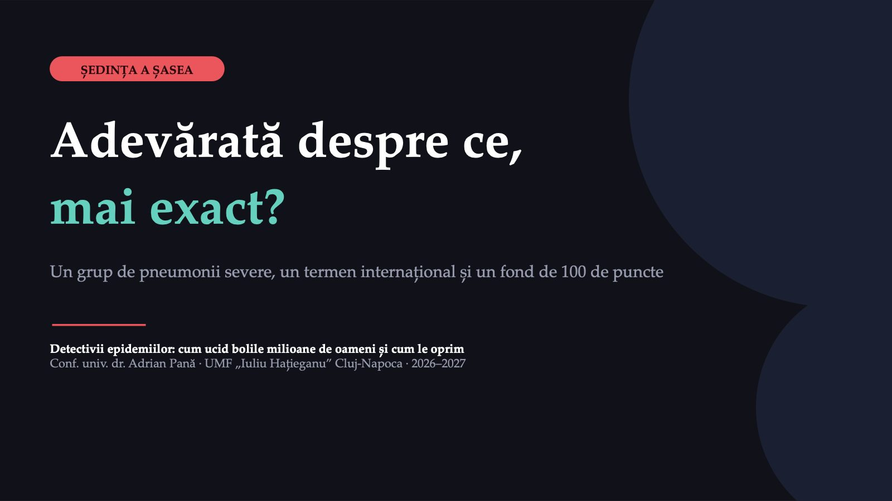
1 / 46Azi urmărim un singur caz, în trei acte: un grup de pneumonii severe într-un spital județean. La fiecare act votați o decizie.
Cine anunță, până când și din ce bani, când apare ceva ce nimeni nu poate explica?
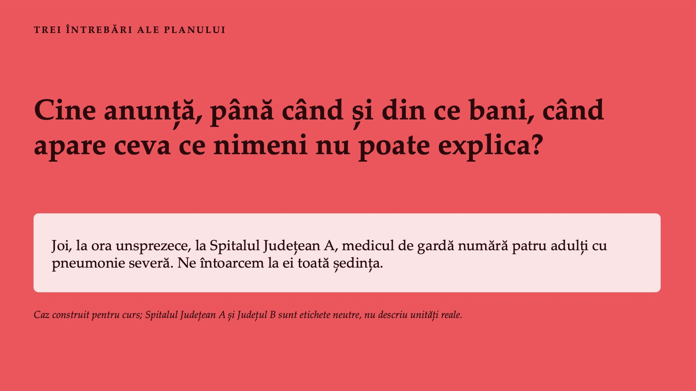
2 / 46Orice plan de răspuns trebuie să spună cine anunță, până când și din ce bani, când apare ceva ce nimeni nu poate explica. Situația este construită pentru curs. Ne întoarcem la ea în fiecare act.
Un răspuns administrativ și o rezervă
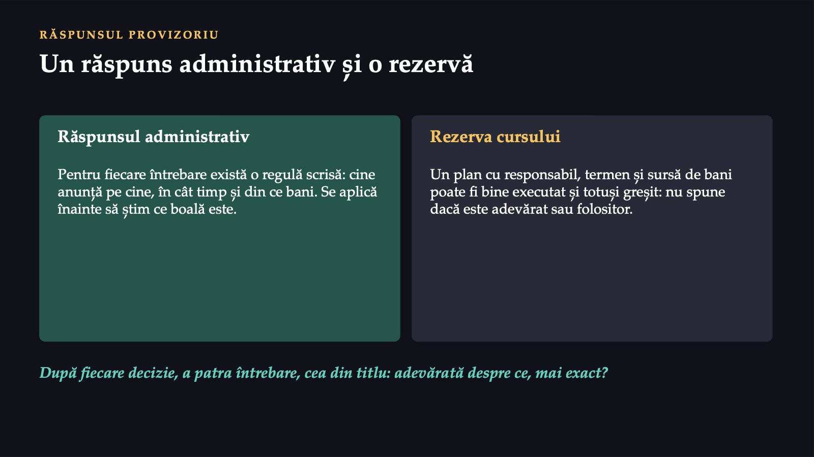
3 / 46Răspunsul cinstit, de la început: pentru fiecare dintre cele trei întrebări există o regulă scrisă. Rezerva cursului este că un plan bine executat poate fi totuși greșit. De aceea, după fiecare decizie, punem a patra întrebare, cea din titlul ședinței.
Un caz în trei acte, câte o decizie la fiecare
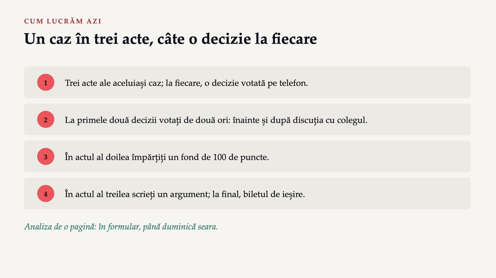
4 / 46Ședința urmărește un singur caz, în trei acte. La primele două decizii votați de două ori, înainte și după ce discutați cu colegul de bancă. Analiza de o pagină se încarcă în formular până duminică, ora 23:59.
Patru
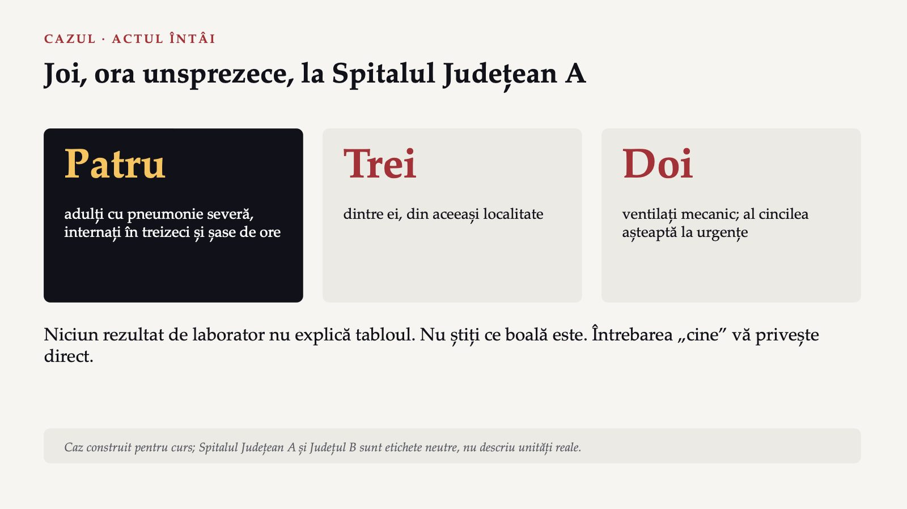
5 / 46Situația este construită pentru curs. Joi, la ora unsprezece, medicul de gardă de la terapie intensivă observă patru adulți cu pneumonie severă, internați în treizeci și șase de ore. Nu știți ce boală este. Prima întrebare a planului, cine, vă privește direct.
Ce faceți în prima oră?
 6 / 46
6 / 46Prima decizie. Votați fiecare, fără discuție: ce faceți în prima oră? Apoi două minute cu colegul de bancă: convingeți-l pe cel care a votat altfel.
Ce faceți în prima oră?
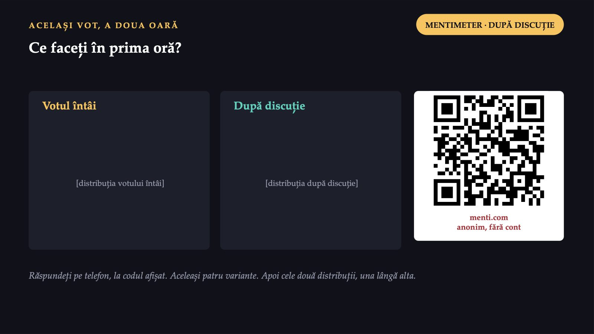
7 / 46Același vot, a doua oară, după discuția cu colegul. Apoi privim cele două distribuții, una lângă alta: contează ce argument v-a făcut să schimbați.
Regulamentul Sanitar Internațional: o regulă pentru stat
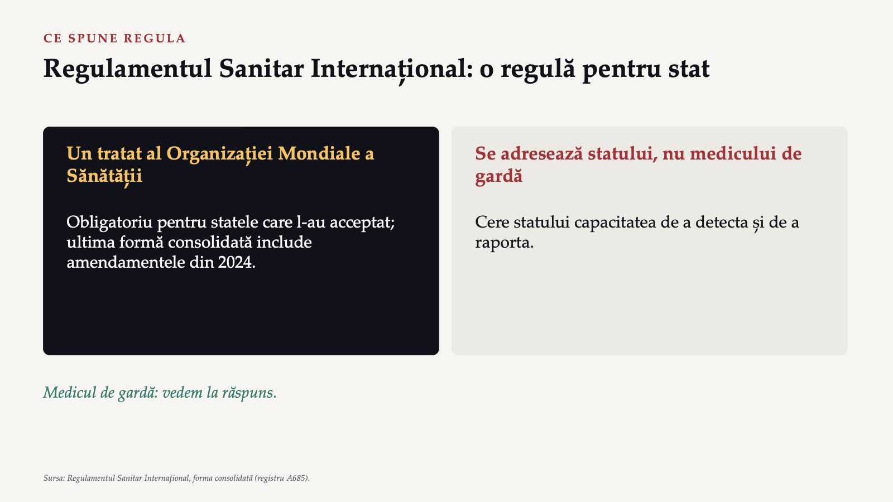
8 / 46Regula internațională se numește Regulamentul Sanitar Internațional. Este un tratat al Organizației Mondiale a Sănătății, obligatoriu pentru statele care l-au acceptat. Nu se adresează medicului de gardă, ci statului.
Varianta B: imediat, către sănătatea publică a județului
![RĂSPUNSUL PRIMEI DECIZII Varianta B: imediat, către sănătatea publică a județului „Imediat” nu înseamnă „după confirmare” și nici „când avem diagnostic”: așa cere Anexa 1 pentru nivelul local. Varianta A contrazice această cerință. Varianta C greșește destinatarul: spre organizație duce un singur canal național. Varianta D trimite primul mesaj spre public. Cum se face anunțul în România nu a fost verificat pentru această ședință. Sursa: Anexa 1 a Regulamentului Sanitar Internațional (registru A682, A686).](diapozitive/C06/009.jpg) 9 / 46
9 / 46Varianta B respectă regula: imediat, către structura de sănătate publică a județului. Așteptarea laboratorului pare prudentă, dar contrazice cerința de a raporta imediat. Comunicarea cu organizația trece printr-un singur canal național. Comunicatul de presă vine prea devreme.
De la medicul de gardă până la Geneva
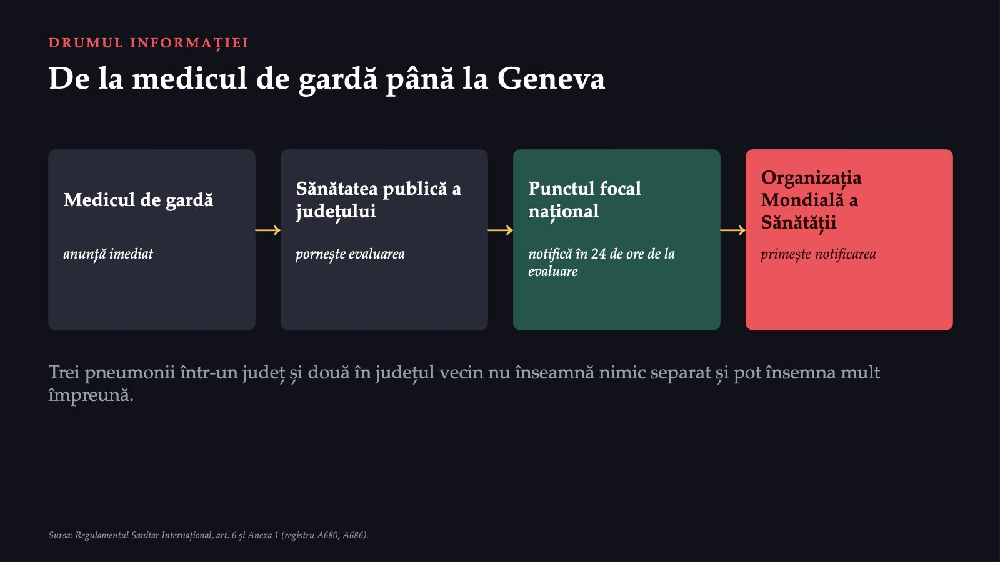
10 / 46Medicul nu ocolește canalul național. El anunță structura de sănătate publică a județului; statul notifică organizația prin punctul focal național. Trei pneumonii într-un județ și două în județul vecin nu înseamnă nimic separat și pot însemna mult împreună.
Punctul focal național
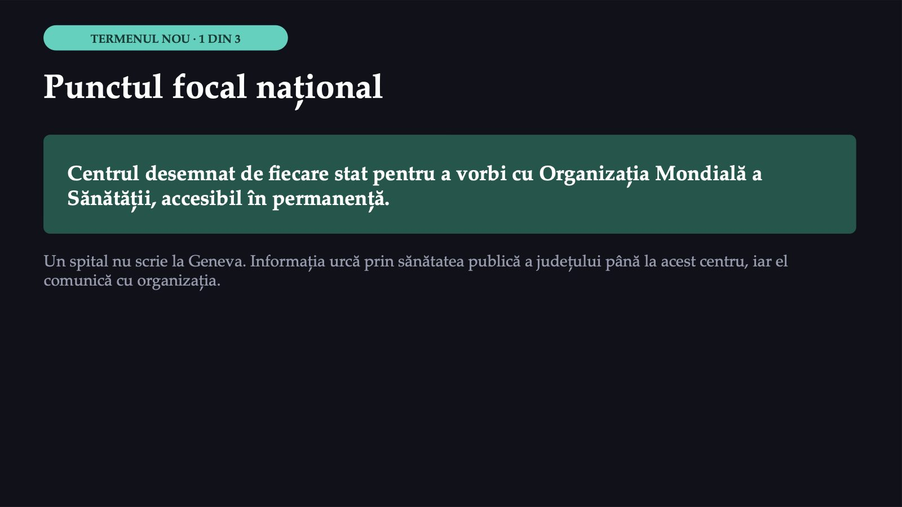
11 / 46Primul termen nou: punctul focal național. Este centrul desemnat de fiecare stat pentru comunicarea permanentă cu organizația, în baza Regulamentului Sanitar Internațional.
Termenul curge de la evaluare, nu de la diagnostic
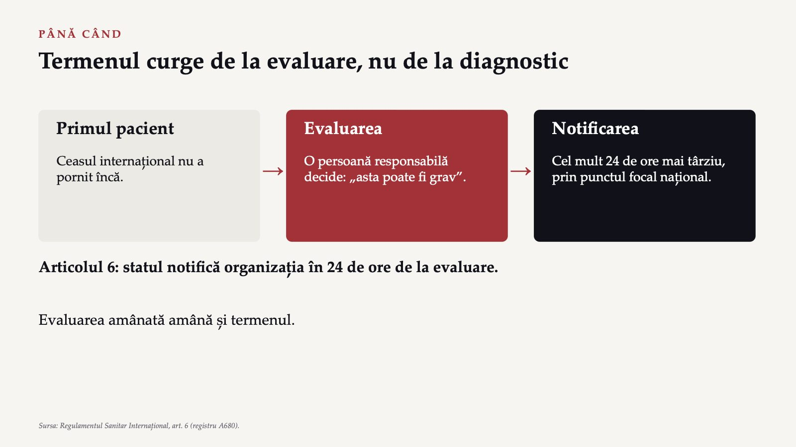
12 / 46Regulamentul vorbește despre evaluare: momentul în care autoritatea de sănătate publică a analizat informația și a decis că evenimentul ar putea fi o urgență. Ceasul nu pornește când boala are un nume. Un stat care amână evaluarea amână și termenul.
Vineri, la Spitalul Județean A
 13 / 46
13 / 46Continuarea cazului construit. A doua zi, una dintre pacientele noi este asistentă medicală pe secția primilor bolnavi. Testele uzuale sunt negative. Un jurnalist sună, iar seara Județul C raportează un caz asemănător. Întrebarea nu mai este a medicului de gardă, ci a nivelului național.
Trebuie nivelul național să notifice acum Organizația Mondială a Sănătății?
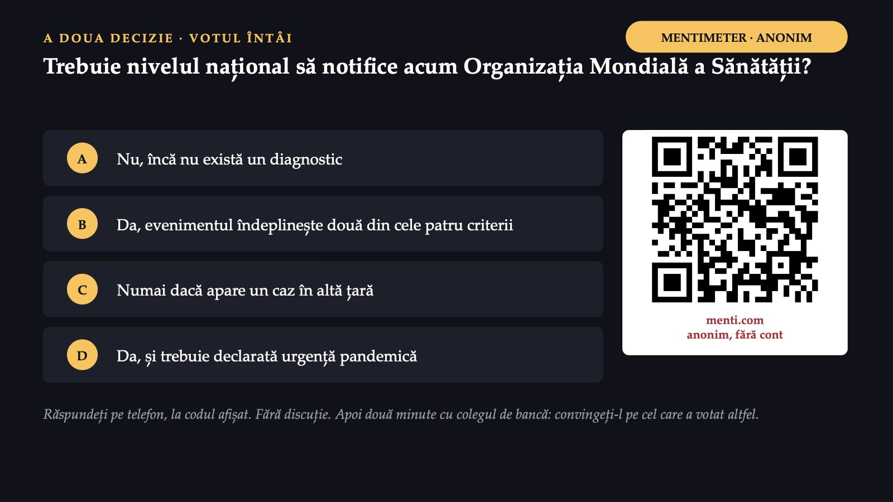
14 / 46A doua decizie. Votați fiecare, fără discuție: trebuie nivelul național să notifice acum organizația? Apoi două minute cu colegul de bancă și votați din nou.
Trebuie nivelul național să notifice acum Organizația Mondială a Sănătății?
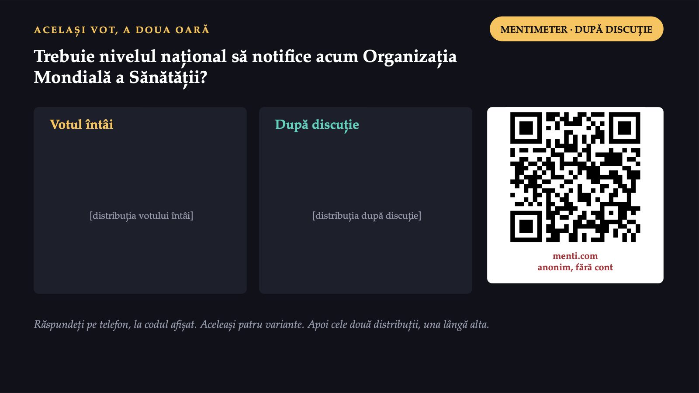
15 / 46Același vot, a doua oară, după discuția cu colegul. Apoi privim cele două distribuții, una lângă alta. Abia după al doilea vot citim împreună ce spune Regulamentul.
Cele „două din patru” criterii
 16 / 46
16 / 46Anexa 2 pune patru întrebări despre eveniment. Dacă oricare două primesc răspuns afirmativ, statul notifică. Nu trebuie să le îndeplinească pe toate și nu trebuie să aibă un diagnostic. În cazul nostru, evenimentul este grav și neobișnuit.
Statul notifică, directorul general declară
![DOUĂ NIVELURI Statul notifică, directorul general declară Notificarea Gestul statului, pe baza Anexei 2. Declararea urgenței internaționale Decizia directorului general, după articolul 12. Urgența pandemică cere patru condiții îndeplinite toate deodată: 1 Răspândire largă, sau risc mare, în mai multe state 2 Sisteme de sănătate depășite sau în risc să fie depășite 3 Perturbare socială sau economică importantă 4 Nevoia unei acțiuni internaționale coordonate Cinci pacienți într-un județ sunt departe de prima condiție.](diapozitive/C06/017.jpg) 17 / 46
17 / 46Notificarea este gestul statului. Declararea unei urgențe internaționale este decizia directorului general al organizației. Pentru urgența pandemică, Regulamentul cere patru condiții îndeplinite toate deodată. Cinci pacienți într-un județ sunt departe chiar de prima.
Organizația poate afla și din presă
![CINE MAI AFLĂ Organizația poate afla și din presă 2 octombrie 2026 Organizația află din presă de decesul unui angajat al unui institut antipestă din Irkutsk. Autoritățile ruse Două investigații independente nu au găsit niciun incident de biosiguranță. 10 octombrie 2026 Expunerea de laborator nu putea fi exclusă; recomandările sunt de precauție, nu confirmă un incident. Articolul 9: organizația poate folosi și alte surse decât notificările statelor. Sursa: buletinul OMS din 10 octombrie 2026; art. 9 RSI (registru A683, A691, A692, A717, A718).](diapozitive/C06/018.jpg) 18 / 46
18 / 46Articolul 9 permite organizației să ia în considerare și alte surse decât notificările statelor. Un exemplu din această toamnă este cazul din Irkutsk: organizația a aflat din presă. Autoritățile ruse au comunicat că nu a existat niciun incident. Recomandările organizației sunt de precauție și nu confirmă o infecție.
Ce poate spune spitalul vineri seara
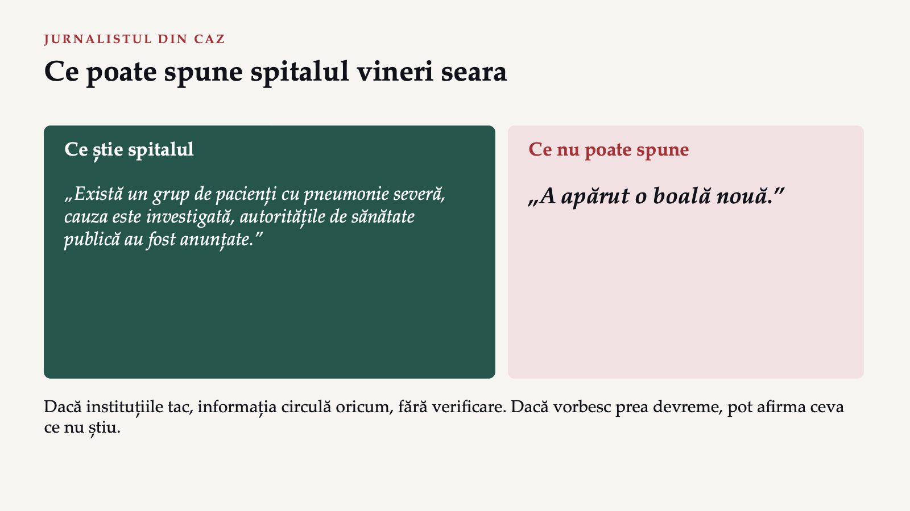
19 / 46Pentru jurnalistul din caz, lecția este dublă. Dacă instituțiile tac, informația circulă oricum, fără verificare. Dacă vorbesc prea devreme, pot afirma ceva ce nu știu. Spitalul spune ce știe și nimic despre o boală nouă.
Un fond de răspuns pentru treizeci de zile
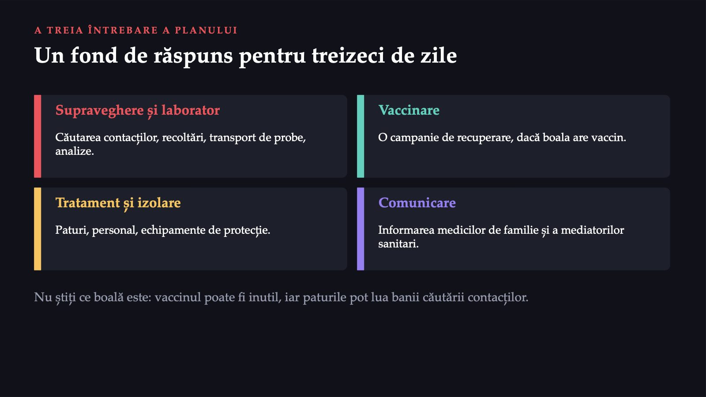
20 / 46Acum vine a treia întrebare a planului, din ce buget. Structura de sănătate publică a județului primește un fond de răspuns pentru treizeci de zile. Îl reprezentăm prin 100 de puncte, pe patru linii. Nu știți încă ce boală este, iar asta face împărțirea grea.
Împărțiți cele 100 de puncte între patru linii
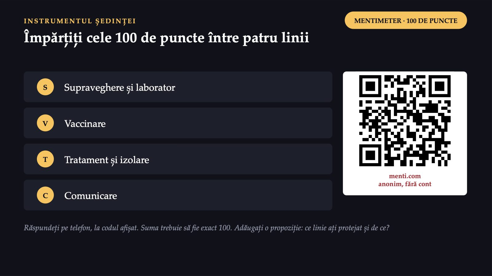
21 / 46Împărțiți cele 100 de puncte între cele patru linii, în formularul de pe ecran. Suma trebuie să fie exact 100. Adăugați o propoziție: ce linie ați protejat și de ce?
Un model simplu, cu trei simplificări spuse de la început
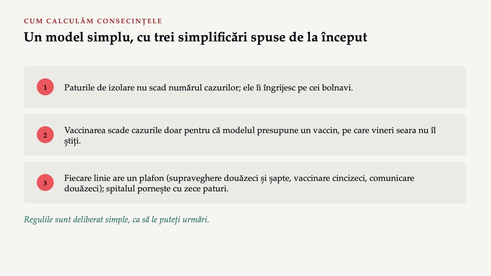
22 / 46Consecințele fiecărei împărțiri le calculăm cu un model simplu, construit pentru această ședință. Regulile lui sunt deliberat simple, ca să le puteți urmări. Modelul are trei simplificări, pe care le spunem de la început.
Cazuri secundare în treizeci de zile
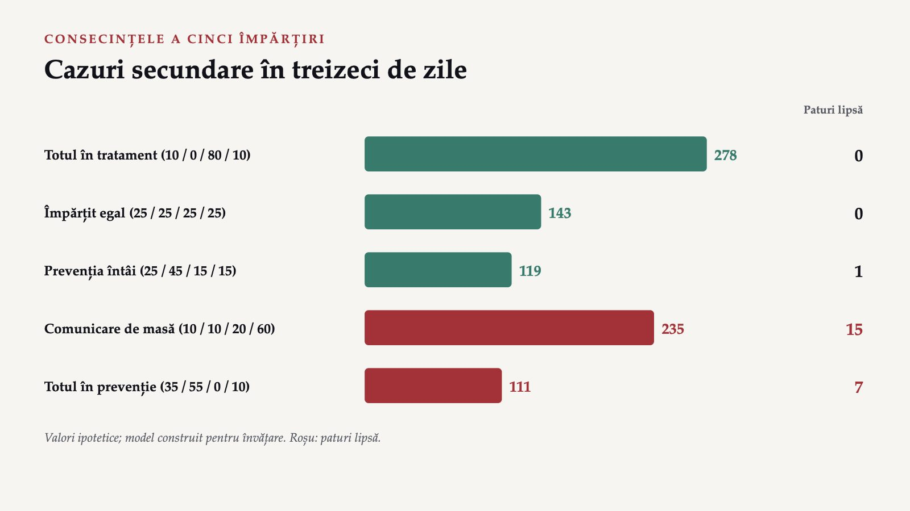
23 / 46Tabelul arată cinci împărțiri și consecințele lor în model. Valorile sunt ipotetice. Fiecare linie arată câte cazuri secundare apar în treizeci de zile și câte paturi lipsesc la vârf.
Ce arată tabelul, dincolo de cifre
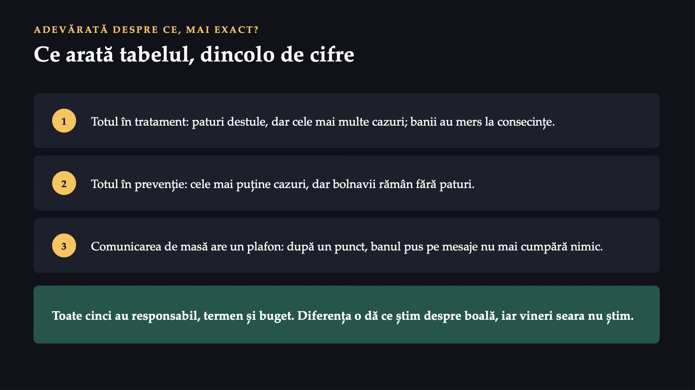
24 / 46Tabelul arată trei lucruri. Împărțirea care pare cea mai sigură are cele mai multe cazuri. Cea care pare cea mai inteligentă lasă bolnavii fără paturi. Comunicarea de masă are un plafon. Toate cinci trec testul administrativ; diferența dintre ele o dă ce știm despre boală.
9 704
 25 / 46
25 / 46Fondul de 100 de puncte este inventat. Problema nu este. Buletinul din 23 octombrie 2026 raporta mii de cazuri confirmate și vorbea despre deficite critice de finanțare. Un studiu de vaccin a pornit la cinci luni după declararea focarului: linia vaccinare poate rămâne goală mult timp.
Ați schimba împărțirea celor 100 de puncte?
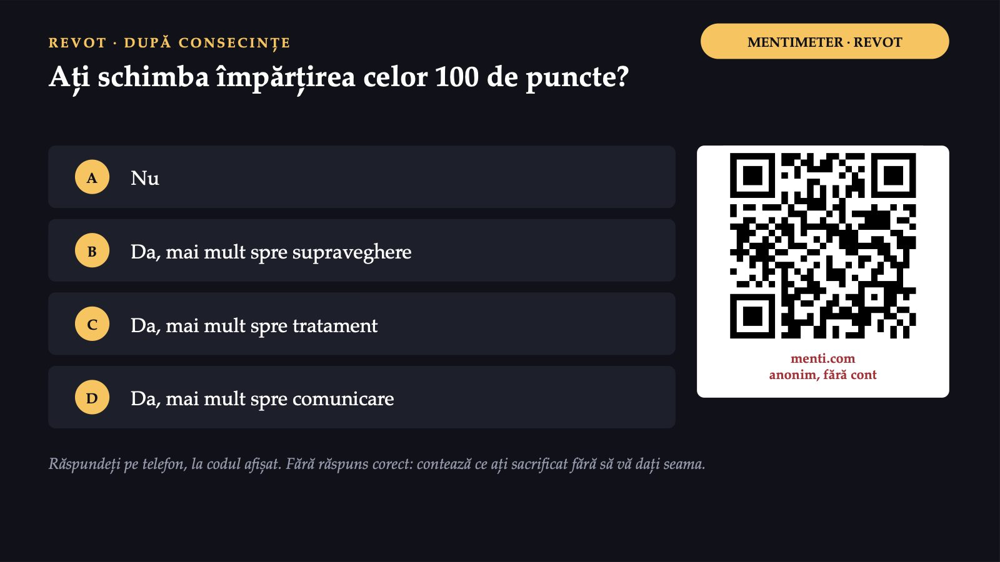
26 / 46Revot. După ce ați văzut consecințele, ați schimba împărțirea celor 100 de puncte? Votați una dintre cele patru variante.
Patru lucruri, înainte de pauză
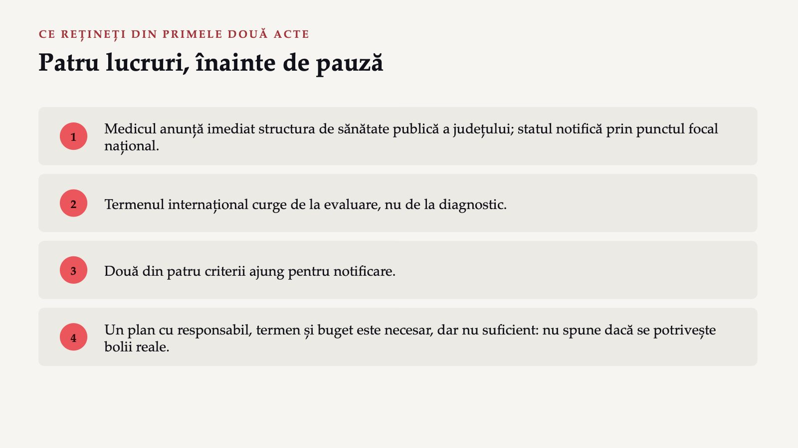
27 / 46Rezumatul primelor două acte, în patru propoziții. Medicul anunță imediat; statul notifică prin punctul focal național. Termenul curge de la evaluare. Două din patru criterii ajung. Un plan corect pe hârtie nu spune dacă se potrivește bolii reale.
Ce știm despre exercițiile de pregătire
 28 / 46
28 / 46Ce ați făcut adineauri seamănă cu un exercițiu de masă. Efectul exercițiilor asupra urgențelor reale este un domeniu de cercetare insuficient dezvoltat. Analiza a 177 de țări a arătat că un loc fruntaș în clasamente nu a fost nici suficient, nici necesar.
Zece minute
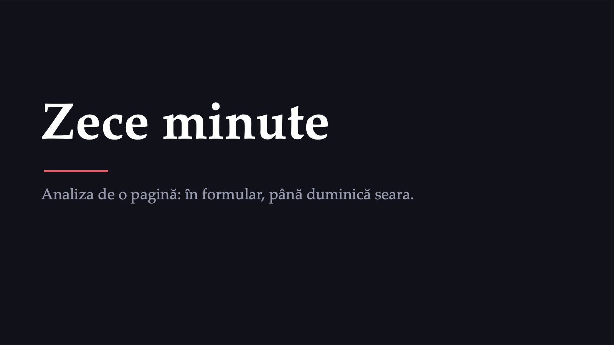
29 / 46Zece minute. Amintiți termenul analizei de o pagină: duminică, ora 23:59.
Luni, la Spitalul Județean A
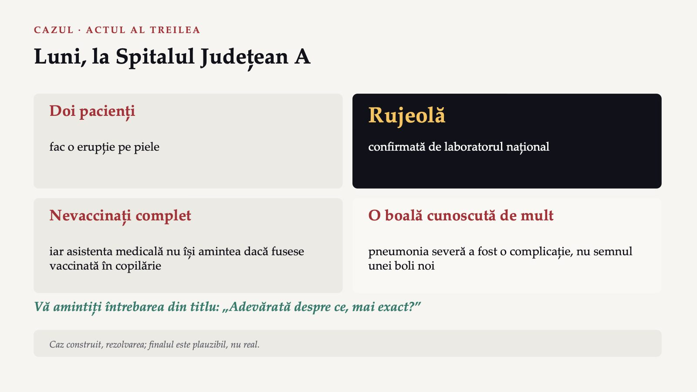
30 / 46Luni dimineață, doi dintre pacienți fac o erupție pe piele. Laboratorul național confirmă rujeola. Niciunul nu avea vaccinarea completă. Pneumonia severă a fost o complicație a unei boli cunoscute de mult, nu semnul unei boli noi.
Un final construit, dar nu improbabil
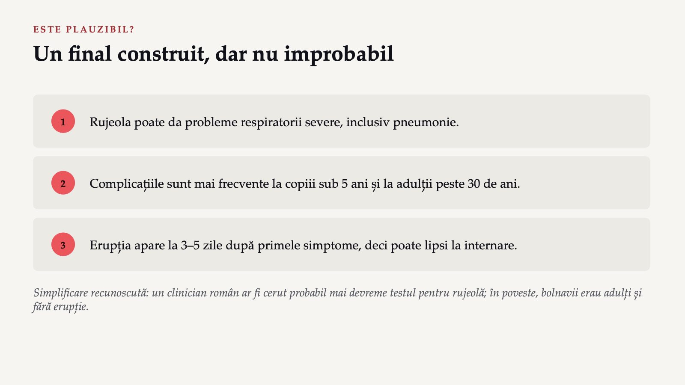
31 / 46Finalul este construit, dar nu este improbabil. Rujeola poate da probleme respiratorii severe, iar erupția poate lipsi în ziua internării. Recunoaștem și o simplificare a cazului: un clinician român ar fi cerut probabil mai devreme testul.
Corect procedural, pregătit pentru altă boală
![ADEVĂRATĂ DESPRE CE, MAI EXACT? Corect procedural, pregătit pentru altă boală Primele două acte Anunț imediat, notificare pe două criterii, împărțirea bugetului: toate corecte. Ce a lipsit Sistemul s-a pregătit pentru o boală necunoscută, deși amenințarea era cunoscută, cu un vaccin sigur și avantajos ca raport între cost și efect. aproape 59 de milioane de decese prevenite prin vaccinarea antirujeolică, 2000–2024 Critica ideii de „boală X”: planurile ignoră bolile deja cunoscute, adesea neglijate. Sursa: registru A729, A714, A706.](diapozitive/C06/032.jpg) 32 / 46
32 / 46Toate deciziile din primele două acte au fost corecte procedural. Dar sistemul s-a pregătit pentru o boală necunoscută, în timp ce amenințarea era una cunoscută, pentru care există un vaccin sigur. Planurile construite în jurul bolii X ignoră boli cunoscute, adesea neglijate.
25 505
![ACEASTA ESTE REALITATE Rujeola în România: ce spun datele 25 505 cazuri confirmate în 2024 19 decese raportate în 2024 133,78 la 100 000 de locuitori; de aproximativ 7 ori mai mult decât în 2023 Epidemia din 2016: 97% dintre cazuri nu primiseră nicio doză, 2% una singură. Acoperire inegală: în județul Cluj, în 2015, prima doză ajungea la 87,8% dintre copii, a doua la 53,1%. Date dintr-un studiu, nu un clasament național. Sursa: CNSCBT, 2024; studiul despre epidemia din 2016 (registru A701, A702, A727, A698, A699).](diapozitive/C06/033.jpg) 33 / 46
33 / 46Aici cazul construit se întâlnește cu datele reale. În 2024 au fost confirmate în România peste douăzeci și cinci de mii de cazuri de rujeolă. Studiul despre epidemia din 2016 a arătat că majoritatea cazurilor nu primiseră nicio doză, iar acoperirea era inegală între județe.
Obstacolele practice descrise de studii
![DE CE NU SE VACCINEAZĂ COPIII Obstacolele practice descrise de studii 1 Vaccinurile din programul public erau gratuite, după cadrele medicale, numai cu acte de identitate. 2 În aproximativ jumătate dintre consultații nu se explica ce vaccinuri se dau și nu se spunea când să revină. 3 Vaccinuri lipsă din stoc, contraindicații false; nu toți părinții știau că sunt gratuite. Studiul observațional a găsit foarte puține probleme de acces propriu-zis. Sursa: studiul etnografic și studiul despre epidemie (registru A693, A694, A697, A720, A721, A700).](diapozitive/C06/034.jpg) 34 / 46
34 / 46Un studiu etnografic, care a observat direct consultațiile, a găsit mai multe obstacole practice: actele, explicația lipsă, stocul, contraindicațiile false. Studiul despre epidemie a constatat că unii părinți nu știau că vaccinurile sunt gratuite.
71%
![ȘI TEAMA DE VACCIN? Teama există, dar nu explică totul 71% de acord că vaccinurile sunt sigure pentru copilul lor 11% nu sunt de acord 17% nu știu sau nu au răspuns 24% au primit informații clare despre reacțiile adverse Majoritatea părinților accepta vaccinarea dacă o recomanda medicul de familie. Obstacolele practice și îngrijorarea apar împreună și trec prin consultație. Observații din eșantioane, nu măsurători pentru toată țara. Sursa: studiul despre epidemia din 2016 (registru A724, A725, A696, A719, A695, A726).](diapozitive/C06/035.jpg) 35 / 46
35 / 46Teama de vaccin există și apare în ambele studii. În studiul despre epidemie, 71% dintre respondenți au fost de acord că vaccinurile sunt sigure, iar numai un sfert au primit informații clare despre reacțiile adverse. Încrederea în medic rămânea mare.
Ce linie de buget este cel mai bine susținută de studiile din România?
 36 / 46
36 / 46A patra decizie, fără revot. După epidemie, Județul C primește bani pentru a crește acoperirea vaccinală într-o comunitate cu acoperire scăzută. Ce linie de buget este cel mai bine susținută de studiile din România? Scrieți un argument de o propoziție, cu sursa lui.
Varianta B, dar nu singură
![RĂSPUNSUL DECIZIEI DE TRANSFER Varianta B, dar nu singură Varianta B răspunde direct obstacolelor: clinici mobile, mediator sanitar, stoc, mesajul „fără acte”. Nu ajunge singură: explicația despre reacțiile adverse lipsea adesea. Varianta A este insuficientă singură: rețelele sociale nu rezolvă actele, stocul și explicația din cabinet. Varianta C nu are sprijin în studii și riscă încrederea în medic. Varianta D întoarce bugetul spre pregătirea pentru necunoscut: greșeala actului al treilea. Sursa: studiul etnografic, clinicile mobile pentru comunitățile dezavantajate (registru A723).](diapozitive/C06/037.jpg) 37 / 46
37 / 46Varianta B este cea mai bine susținută, pentru că răspunde direct obstacolelor descrise. Nu ajunge însă singură. Campania pe rețelele sociale este insuficientă singură. Amenzile nu au sprijin în aceste studii și riscă încrederea în medic.
Efectul de bumerang
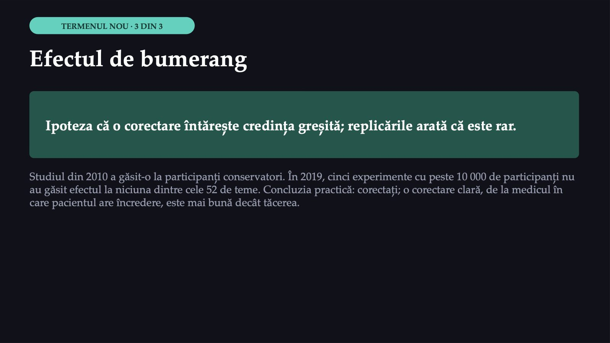
38 / 46Mulți medici evită să corecteze de teamă că vor întări informația greșită. Replicările ulterioare nu au confirmat amploarea efectului. Concluzia practică: corectați. O corectare clară, venită de la medicul în care pacientul are încredere, este mai bună decât tăcerea.
Nu ajunge „nu este adevărat”
![CORECTAREA ARE O LIMITĂ Nu ajunge „nu este adevărat” Golul din poveste O informație greșită persistă pentru că are un rol cauzal în povestea omului. Spunând doar „nu este adevărat”, îi luați o explicație fără s-o înlocuiți. Alternativa cauzală O explicație nouă, adevărată, care ocupă locul celei greșite: nu doar „nu de la vaccin”, ci și „atunci de la ce”. Avertisment plus explicație alternativă pare tehnica cea mai eficientă, dar nu merge întotdeauna: în practică, alternativa credibilă este adesea imposibil de găsit.](diapozitive/C06/039.jpg) 39 / 46
39 / 46Corectarea are o limită. Dacă îi spuneți cuiva doar că nu este adevărat, îi luați o explicație și nu îi dați alta. Explicația care ia locul celei greșite se numește alternativă cauzală. Nu ajunge să spuneți nu de la vaccin; trebuie să spuneți și atunci de la ce.
Explozie de cazuri de rujeolă în România: doar 1 din 4 copii e vaccinat
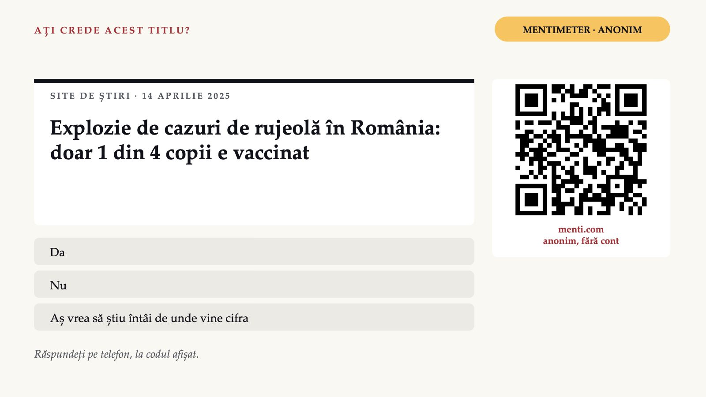
40 / 46Pe 14 aprilie 2025, un site de știri a publicat, după o agenție de presă, un titlu despre rujeolă în România. Ați crede acest titlu? Ce ați verifica întâi?
În text scrie altceva decât în titlu
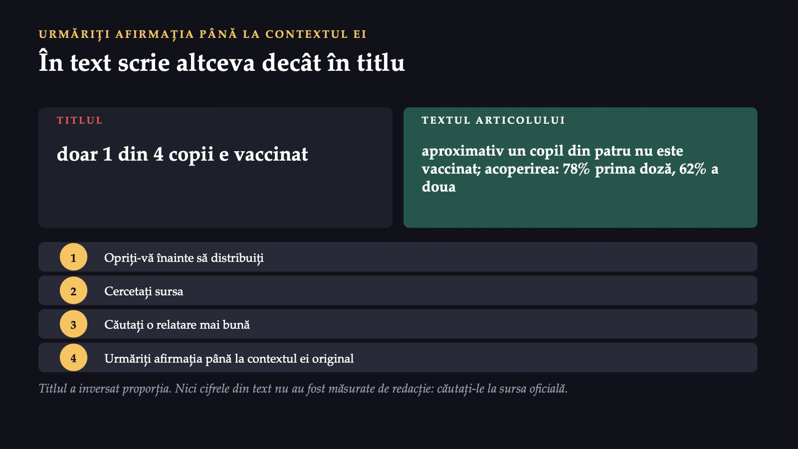
41 / 46O metodă scurtă de verificare are patru pași: vă opriți înainte să transmiteți mai departe, cercetați sursa, căutați o relatare mai bună și urmăriți afirmația până la contextul ei original. Aplicați ultimul pas chiar pe articol. În text scrie altceva decât în titlu.
Un părinte vă spune ceva despre vaccin
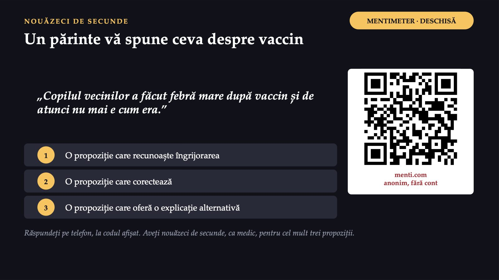
42 / 46Exercițiul Nouăzeci de secunde. Un părinte spune că a văzut un copil care a făcut febră mare după vaccin. Aveți nouăzeci de secunde, ca medic, să răspundeți în cel mult trei propoziții: una recunoaște îngrijorarea, una corectează, una oferă o explicație alternativă.
Nu începe cu „nu este adevărat”
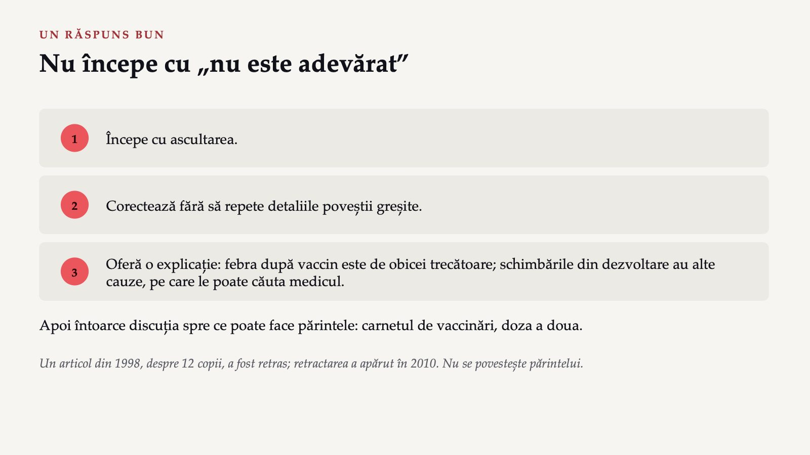
43 / 46Un răspuns bun nu începe cu nu este adevărat. Începe cu ascultarea, corectează fără să repete detaliile poveștii greșite și oferă o explicație. Povestea părintelui are o istorie: un articol din 1998 a fost retras, iar retractarea a apărut în 2010.
Zece întrebări din cazul de azi
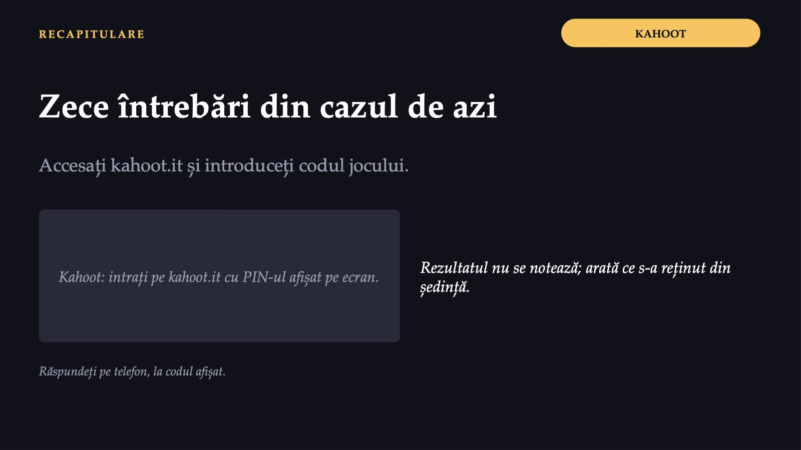
44 / 46Zece întrebări rapide, numai din cazul de azi: cine anunță, de la ce moment curge termenul, câte criterii ajung, ce obstacole au găsit studiile din România, ce este alternativa cauzală. Nu se notează.
Ce faceți diferit de mâine
![ÎNAPOI LA SPITALUL JUDEȚEAN A Ce faceți diferit de mâine 1 Anunțați imediat structura de sănătate publică a județului, fără să așteptați diagnosticul. 2 Când citiți un plan, întrebați cine, până când și din ce buget, apoi dacă răspunde bolii reale. 3 Înainte de necunoscut, uitați-vă la bolile cunoscute pe care le neglijați. 4 Când un pacient crede ceva greșit, corectați clar și oferiți o explicație alternativă. 5 Când un părinte nu și-a vaccinat copilul, întrebați de acte, stoc, explicație și teamă. Adevărată despre ce, mai exact?](diapozitive/C06/045.jpg) 45 / 46
45 / 46Cinci lucruri pe care le puteți face diferit de mâine, ca studenți și ca medici. Cazul de azi se rezumă într-o frază: procedura a fost corectă, iar întrebarea rămasă este cea din titlu: adevărată despre ce, mai exact.
Biletul de ieșire
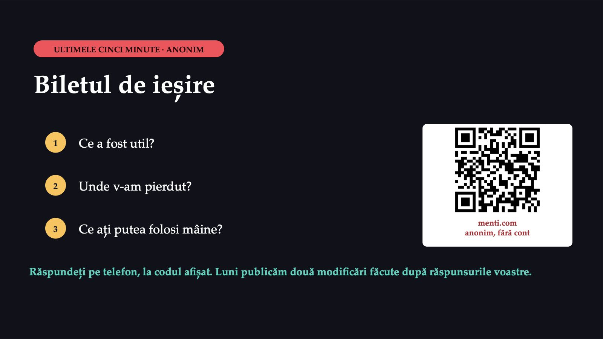
46 / 46Trei întrebări anonime, pe telefon. Luni veți vedea pe pagina cursului ce am schimbat după răspunsurile voastre.
Săgeți sau spațiu: navigare · O: vedere de ansamblu · N: notele prezentatorului · F: ecran complet · Esc: închidere